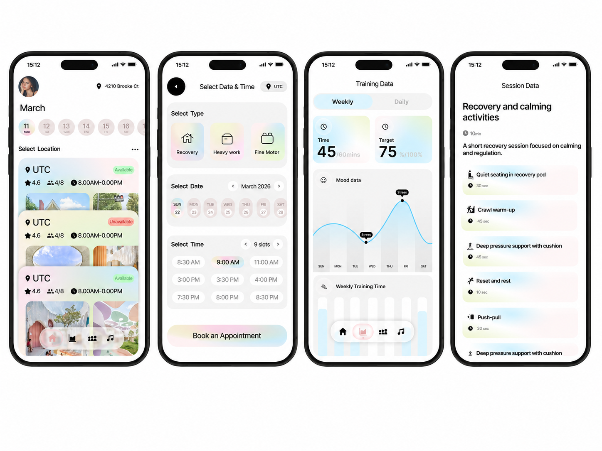
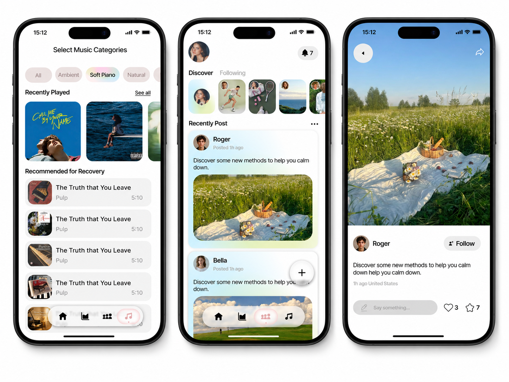
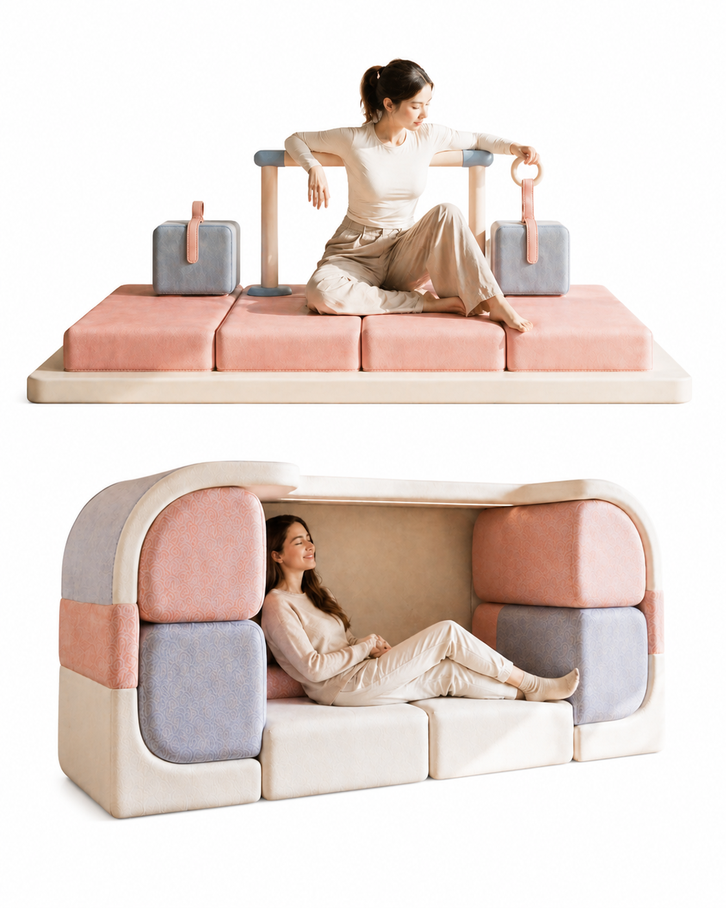

01
Proprioceptive Input
Heavy work, resistance, pressure, and muscle-based movement can help regulate the body before or during stressful tasks.
- push / pull
- carrying / lifting
- deep pressure
- climbing / crawling
Portfolio Case Study
A sensory recovery space and mobile booking system designed to help users find, reserve, and complete calming recovery sessions through guided activities, low-stimulation spatial support, and personalized training data.
The project connects mobile booking, recovery training, and a spatial support system for users experiencing sensory overload.
UX Research / App Design / Product Design / Spatial Experience Design
Figma / User Interview / Product Visualization / System Design
Sensory Recovery / Appointment Booking / Calming Activities / Training Data / Spatial Support
Sensory over-responsivity can make everyday environments feel overwhelming. Users may react strongly to food texture, clothing texture, personal space, sudden movement, loud noise, bright light, overheating, touch, and strong smells.
Sensory overload can lead to dizziness, nausea, shortness of breath, shaking, chills, migraines, and emotional overwhelm.
Existing coping strategies often depend on self-management after overload has already escalated. Users need a low-stimulation space, early support, and tools for emotional regulation.
Users need calm, quiet, low-stimulation spaces and better preparation before overwhelming situations.
Users often rely on reactive coping strategies only after overload has already happened. Control and safety matter because public or work environments can make overload worse.
"I want it to be easy to access, calming, and visually clear. It should provide a quiet, low-stimulation space and help me notice stress earlier."
Isabella represents users who need quick access to calm, private sensory regulation before overwhelm becomes severe.
Persona
Profile
Isabella often experiences sudden sensory overload, especially under stress. Her main triggers include touch, bright light, and strong smells, which can make work and daily routines difficult to manage.
The recovery experience combines body-based regulation, motion support, and gradual tactile exposure.
Heavy work, resistance, pressure, and muscle-based movement can help regulate the body before or during stressful tasks.
Balance, motion, and spatial orientation exercises support body regulation and movement awareness.
Gradual tactile exposure helps users build tolerance to textures and sensory input.
The system should help users prepare early, recover quickly, and return to the original activity with more control.
Users need early support that helps them regulate before sensory overload escalates.
A low-stimulation environment can help users recover quickly without making the experience feel clinical.
Users need recovery activities that fit into real-world contexts like malls, supermarkets, workplaces, and public spaces.
The experience should help users prepare before overstimulation, recover during overload, and return to the original activity afterward.
The final direction became a two-part system: a mobile app and a physical recovery space.
The app screenshots are shown as large white-background mockup showcases and kept exactly as provided.
The booking and training flow helps users select a recovery type, choose a time and location, and review guided training data.

The music and community flow extends recovery support through calming audio, shared experiences, and content-based emotional support.

The product image is shown without altering the product, person, lighting, colors, shape, cushion layout, or background inside the image.
The physical recovery space uses soft modular cushions, enclosed seating, tactile surfaces, grip rings, and movement-support elements to create a calm environment for sensory regulation. It supports resting, gentle movement, tactile training, and short recovery sessions.
